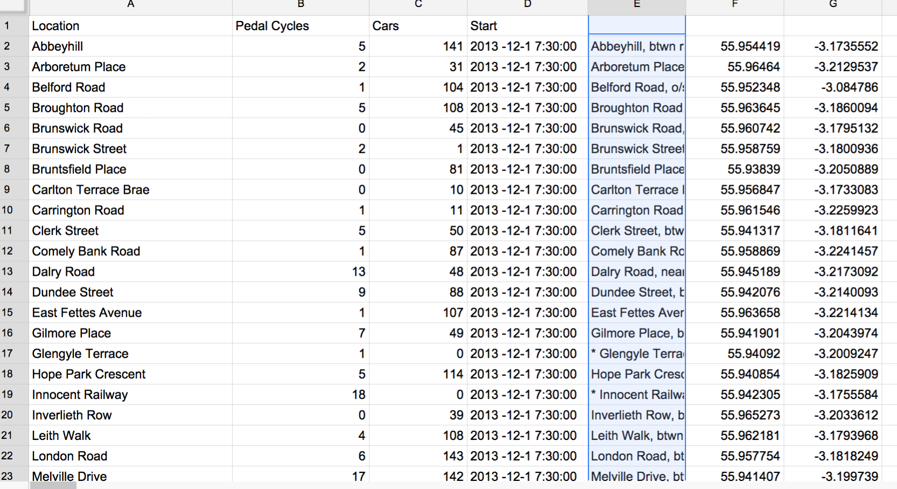

Decide where you are going to store your work, i.e., any data sets that you download and modify, any scripts you might write or use, any other outputs that you create from the data. Options (not mutually exclusive) include:
Name your work folders clearly and create subfolders if necessary. Do you care if you lose the folder?
Data stores to use:
And possibly
Try to use data from the CEC data sets to answer the following questions about Inverleith.
You may be able to do this by identifying relevant data sets in the CEC data stores and just looking at the data.
You may find that some of the data is geocoded using WGS84 latitude and longitude coordinates; e.g., 55.954419, -3.1735552. If you just paste these coordinates into a Google search bar, it will return a little map of the location.
Cepats 2013.xls file from CEPATS dataFile > Import > Replace spreadsheet.IN0730 and Survey Information. Let's start with IN0730IN0730Survey InformationWe want to just keep information to the left of the / in column B and just information to the right of the / in column C.
We'll use Edit > Find and replace on each column separately, and we'll use regular expressions.
Find: / [0-9]+
Replace:
Search using regular expressions
Specific range: `'Survey Information'!B:B
Find: [0-9]+ /
Replace:
Search using regular expressions
Specific range: `'Survey Information'!C:C
We are now going to use the GridReferenceFinder. This requires that you paste your tabular data into a box and tick some options. It should look like this:
Paste the results back into a new sheet.
Next, you are are going to add the new data you've just created into IN0730. You want to add this new data as extra columns. The locations in IN0730 should align with the street locations that you have just pasted in.
It should look something like this (ignore the 'Start' column): . You can now go ahead and delete the column with locations that pasted in, leaving just the new geo-coordinates. Give labels to these two new columns: Latitude and Longitude.
Select column D 1:38
Data > Sort range from D1 to D38
sort by Column D A->Z
https://support.google.com/fusiontables/answer/2476954?hl=en&topic=2569513&ctx=topic
https://www.google.com/fusiontables/data?docid=1BDnT5U1Spyaes0Nj3DXciJKa_tuu7CzNRXWdVA#map:id=3
Change feature styles > Map marker icons > Column > Use icon specified in a column > Select > Icon
Filter > Catagory
choose either cars or pedal cycles